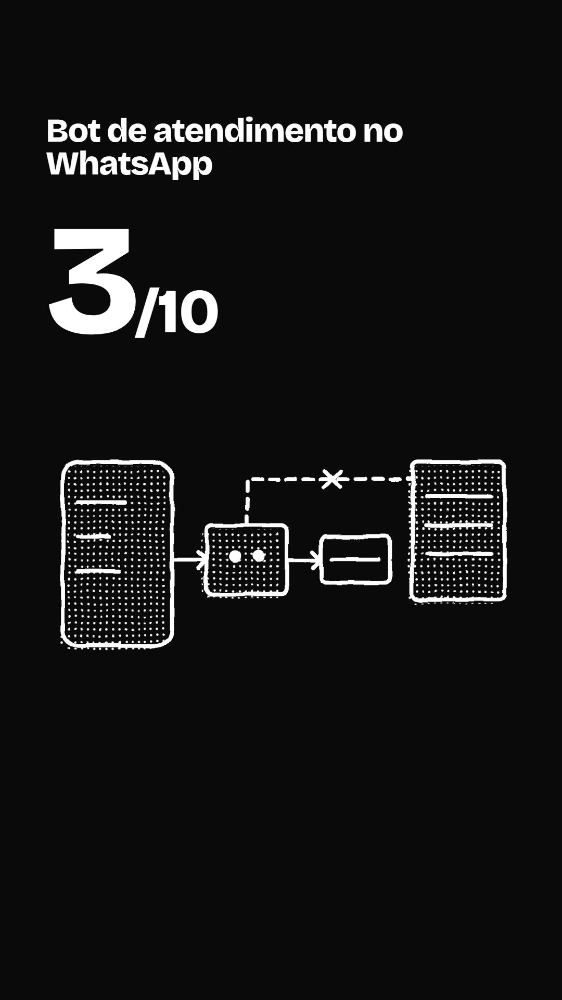
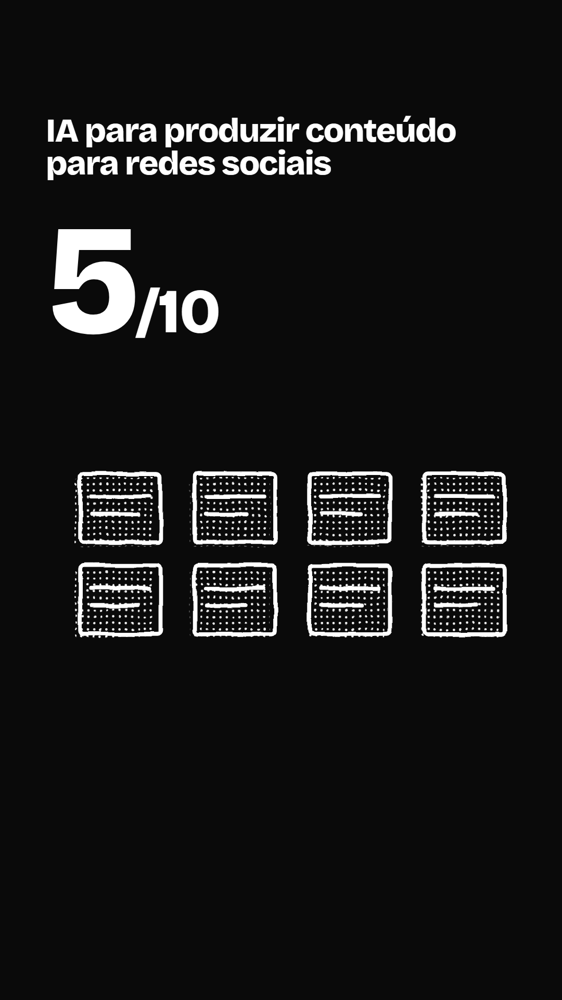
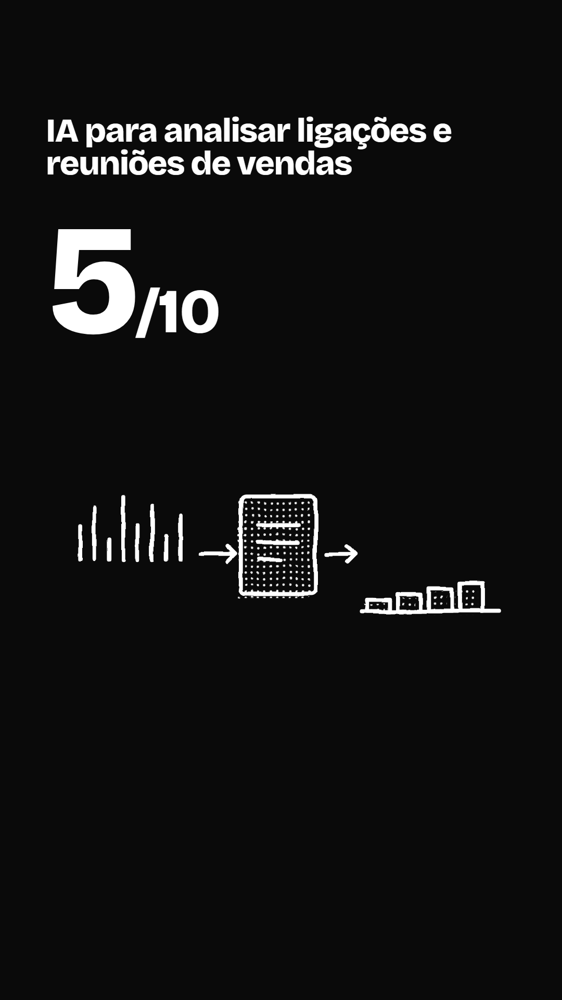
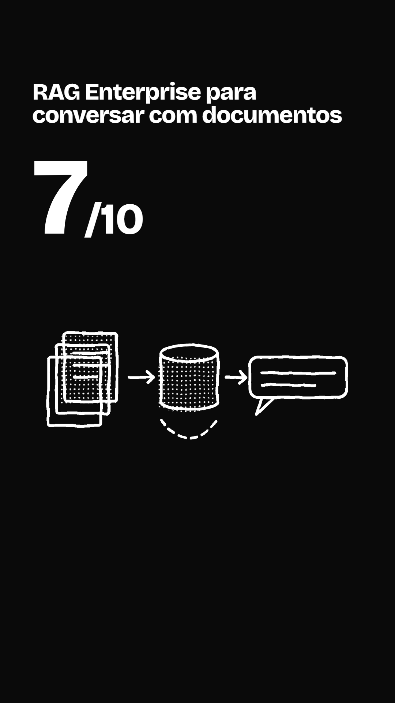
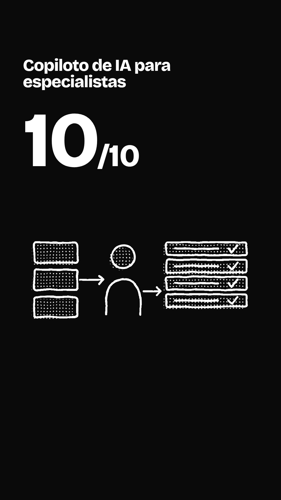
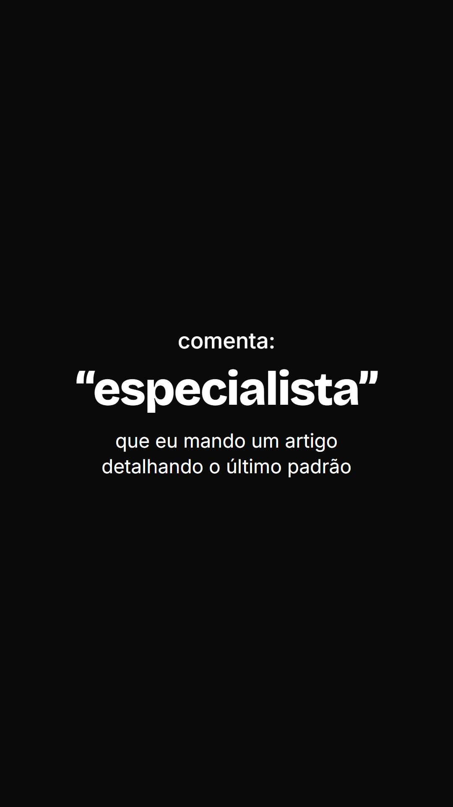

Minha opinião sobre
use cases de AI
comuns da indústria



Comercial: funciona, mas o retorno não é tão alto.

Conhecimento interno: pra maioria, Gemini ou Copilot já resolvem.

Operação: o especialista produz muito mais.
